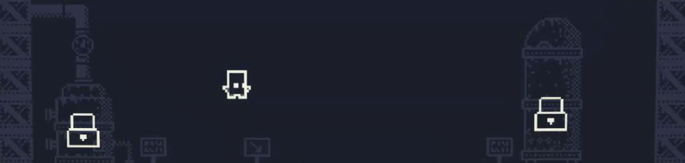

Glitched Mayhem Publishing

Hey!
Good to see you checking in! My love for games has grown strong over the years. Approximately 7 years ago, I
opened up my first game engine and have been programming ever since. Fast forward to today, and now I
create websites to promote my biggest game idea thus far.
Glitched Mayhem is a roguelite with a high focus on replayability, where new challenges and experiences never end. This project draws heavy inspiration from popular roguelites/roguelikes such as Risk of Rain 2, Binding of Isaac, Hades, Cult of the Lamb, Journey of the Prairie King, and Undertale. Despite these influences, Glitched Mayhem strives to be original by connecting many elements cohesively without overwhelming the player.
Currently, Glitched Mayhem follows a story that indulges the player in a fun time on an old arcade machine that is supposedly out of order. As the player progresses, more glitches and artifacts appear, making the game seem increasingly broken. The final boss reveals that the player is causing the game's demise. Upon defeating the last boss, the game crashes, reboots, and you are back at the beginning in true roguelite fashion.
The game's release is planned for a soft launch in Q1 2025, with a full release closer to Q2 2025 on PC and all consoles as an action-roguelite. The game is in a state where the controls could be converted to touch controls, though there are no plans for this at the moment. A big selling point is that multiplayer (couch play) will be available at launch, with plans to expand multiplayer features in the future. Now! Enough reading for a while, let me show you what this project is all about!